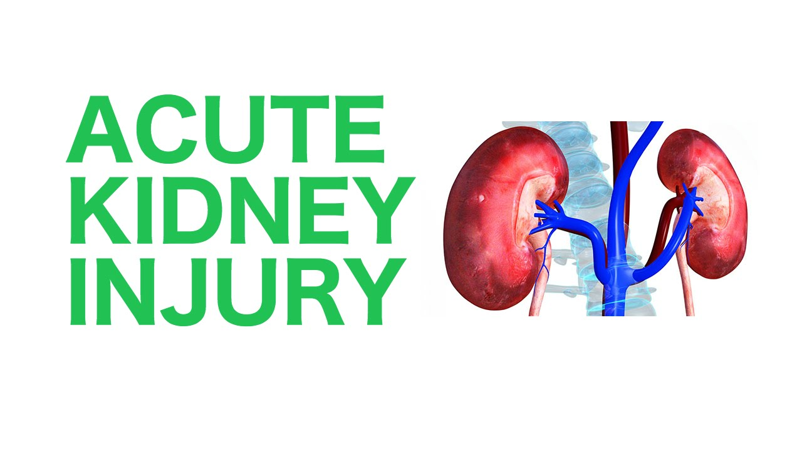

Acute Kidney Injury (AKI), previously known as acute renal failure (ARF), is a sudden and often reversible decline in kidney function. It can range from a minor loss of kidney function to complete kidney failure.
AKI is characterized by: An increase in serum creatinine or blood urea nitrogen (BUN) A decrease in urine output Fluid retention and volume overload AKI can be caused by a number of conditions, including infections, conditions that reduce blood flow to the kidneys, or medications that damage the kidneys. It's most common in hospital settings, especially in critical care patients.
Symptoms of AKI include:
If left untreated, AKI can have a very high mortality rate. Treatments include fluids, medication, and dialysis.
